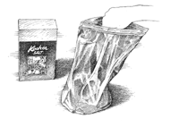
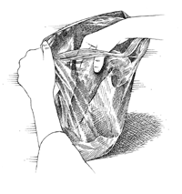

UNIVERSAL FORMULA FOR BRINING
|
Since we brined our first turkey several years ago, we have been captivated by the benefits
of brining. Brines are featured in many of our recipes, which, given the particular time
constraints and the nature of the food being brined, recommend a rather wide variety of
formulas. We decided to get scientific and come up with a single, all-purpose formula. To
start, we reviewed all of our brining recipes and calculated an average ratio of water to salt to
sugar as well as an average brining time per pound of meat. Using this new standard formula,
we cooked our way through various cuts of poultry and pork and several types of seafood,
and it worked in all but a few situations. High roasting (450 to 500 degrees),
broiling, and high-heat grilling all require a brine with less sugar to ensure the skin or exterior will not burn.
(After brining a turkey or fresh ham, rinse well to remove any remaining sugar.)
To keep the flavors of the high-heat brine balanced, we also reduced the amount of salt.
How to Brine

1. Mix cold water, salt, and sugar in brining vessel and stir to dissolve
salt and sugar.
|

2. Immerse food in brine, seal, and refrigerate. (If not refrigerating,
add ice packs before covering.)
|
|
| Type of Brine |
Cold Water |
Salt |
Sugar |
Amount of Brine |
Time |
| High-heat roasting, broiling, or high-heat grilling |
1 quart |
- 1/4 cup Diamond Crystal kosher
- 3 tablespoons Morton kosher
- 2 tablespoons table
| 2 tablespoons |
1 quart per pound of food, not to exceed 2 gallons brine |
1 hour per pound, but not less than 30 minutes or more than 8 hours
|
| Basic |
1 quart |
- 1/2 cup Diamond Crystal kosher
- 1/4 cup + 2 tablespoons Morton kosher
- 1/4 cup table
| 1/2 cup |
1 quart per pound of food, not to exceed 2 gallons brine |
1 hour per pound, but not less than 30 minutes or more than 8 hours
|
|
|
|
|
|